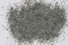

|
|
(For further information on spectroscopy, see:
http://speclab.cr.usgs.gov)
TITLE: Pigeonite HS199 DESCRIPT
DOCUMENTATION_FORMAT: MINERAL
SAMPLE_ID: HS199
MINERAL_TYPE: Inosilicate
MINERAL: Pigeonite (Pyroxene group)
FORMULA: (Mg,Fe+2,Ca)(Mg,Fe+2)Si2O6
FORMULA_HTML: (Mg,Fe+2,Ca)(Mg,Fe+2)Si2O6
COLLECTION_LOCALITY: Loudoun County, Virginia
ORIGINAL_DONOR: Hunt and Salisbury Collection
CURRENT_SAMPLE_LOCATION: USGS Denver Spectroscopy Laboratory
ULTIMATE_SAMPLE_LOCATION: USGS Denver Spectroscopy Laboratory
SAMPLE_DESCRIPTION:
I-6 Pigeonite 199B-Londoun Co., Va. (Mg, Fe2+, Ca) (Mg, Fe2+) (Si2O6): This mineral is common in igneous rocks of the extrusive volcanic type, particularly in andesites and dacites. Its spectrum is quite flat with a broad feature at 0.95µ, typical of six-fold coordinated ferrous iron.
Sieve interval 74 - 250µm.
Hunt, G.R., J.W. Salisbury, and C.J. Lenhoff, 1973, Visible and near-infrared spectra of minerals and rocks: VI. Additional silicates. Modern Geology, v. 4, p. 85-106.
IMAGE_OF_SAMPLE:

END_SAMPLE_DESCRIPTION.
XRD_ANALYSIS:
40 kV - 30 mA, 7.3-9.5 keV
File: pignt199.out, -.mdi (smear mount on quartz plate)
References: Borg and Smith (1969); Huebner's reference patterns.
Found: high albite, clinopyroxene, minor quartz, many weak
unidentified reflections, including a possible ilmenite (211)
Comment: Sharp reflections suggest good crystallinity and compositional heterogeneity. Quartz has some unusual relative intensities, perhaps because the amount present is insufficient to give a random distribution of grain (lattice) orientations. The clinopyroxene pattern is very similar to that obtained from a lunar augite-pigeonite intergrowth; in neither case were two clinopyroxenes resolved in the powder pattern.
J.S. Huebner, J. Pickrell, T. Schaefer, written communication(USGS)
END_XRD_ANALYSIS.
COMPOSITIONAL_ANALYSIS_TYPE: EM(WDS) # XRF, EM(WDS), ICP(Trace), WChem
| COMPOSITION KEYWORD |
Oxide ASCII |
Amount | Weight Percent, % |
Oxide html |
|---|---|---|---|---|
| COMPOSITION: | FeO | 25.31 | wt% | FeO |
| COMPOSITION: | MnO | 40.86 | wt% | MnO |
| COMPOSITION: | CaO | 33.93 | wt% | CaO |
| COMPOSITION: | Total | wt% | ||
| COMPOSITION: | O=Cl,F,S | wt% | #correction for Cl, F, S | |
| COMPOSITION: | New Total | wt% |
COMPOSITION_TRACE:
COMPOSITION_DISCUSSION:
END_COMPOSITION_DISCUSSION.
MICROSCOPIC_EXAMINATION:
END_MICROSCOPIC_EXAMINATION.
SPECTROSCOPIC_DISCUSSION:
END_SPECTROSCOPIC_DISCUSSION.
SPECTRAL_PURITY: 1b2c3c4_ # 1= 0.2-3, 2= 1.5-6, 3= 6-25, 4= 20-150 microns
| LIB_SPECTRA_HED: | where | Wave Range | Av_Rs_Pwr | Comment |
|---|---|---|---|---|
| LIB_SPECTRA: | splib04a r 3906 | 0.2-3.0µm | 200 | g.s.= |
| LIB_SPECTRA: | splib05a r 5438 | 0.2-3.0µm | 200 | g.s.= |
| LIB_SPECTRA: | splib06a r 17843 | g.s.= | ||
| LIB_SPECTRA: | splib06a r 17856 | g.s.= |
{kind=link}